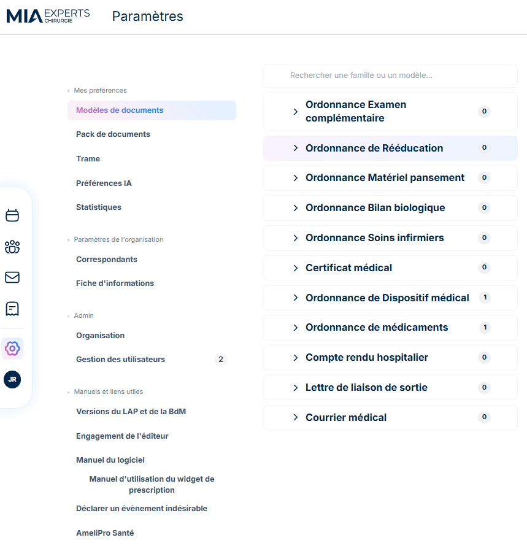
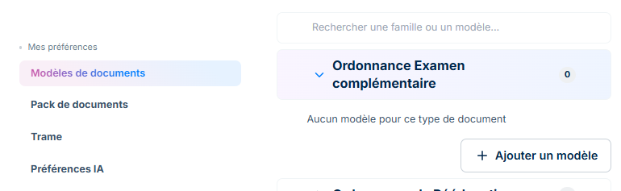
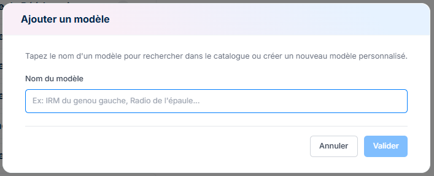

Paramètres et Profil utilisateur
Paramètres
Le chapitre Paramètres et modèles permet de comprendre comment configurer en amont le fonctionnement de MIA Experts afin d’automatiser et de standardiser les pratiques médicales et chirurgicales. Ces paramètres conditionnent directement la création des événements, des documents, des consultations et des blocs opératoires.

Mes préférences
Modèles de documents
Dans cette brique vous pouvez personnaliser les documents selon vos habitudes.

Il vous suffit de cliquer sur une famille de document pour que l'option "+ Ajouter un modèle" s'affiche.


Choisissez un nom pour votre modèle puis cliquez sur Valider
// A COMPLETERPack de documents
Trame
Préférences IA
Statistiques
Paramètres de l'organisation
Correspondants
Pack de documents